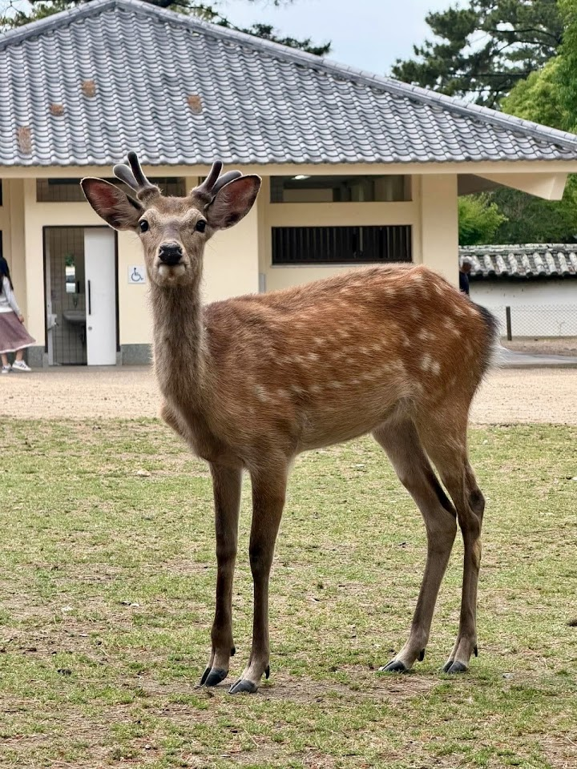
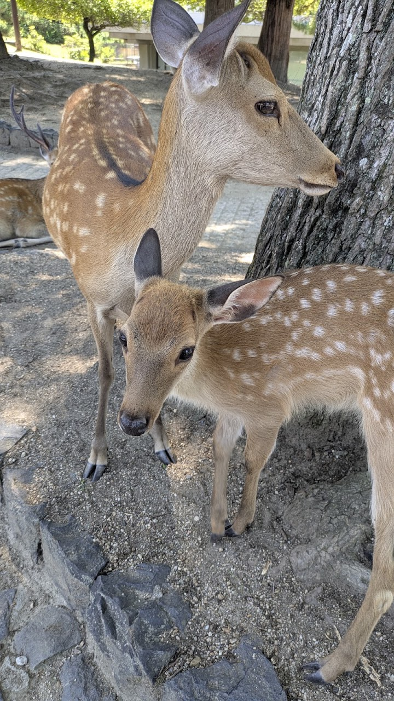
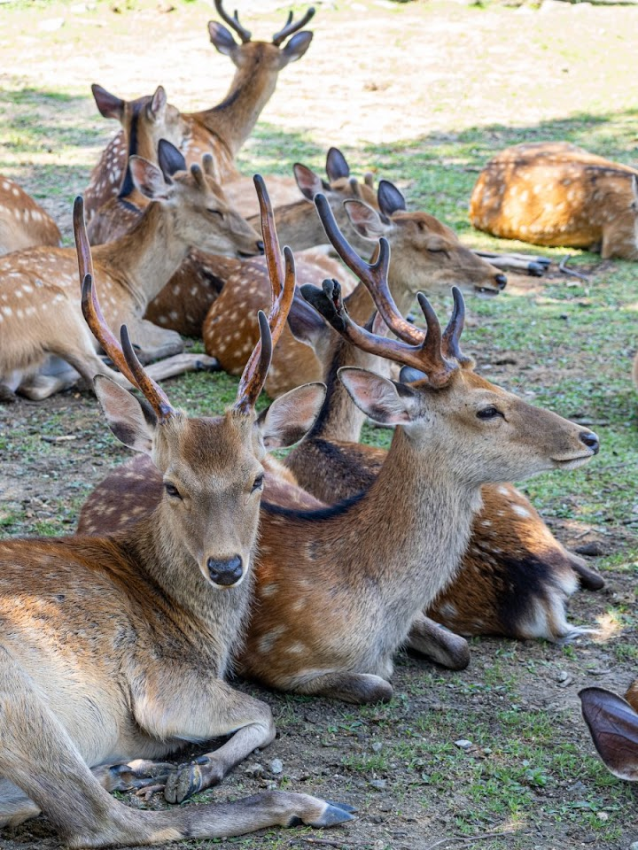
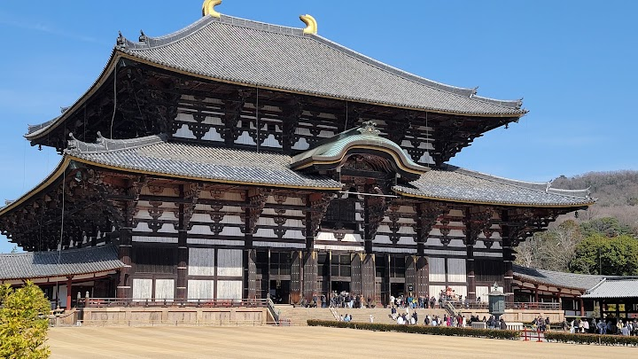
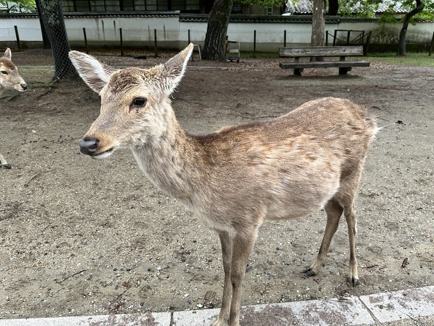

Deer Park (Nara Park)
Nara Park is a vast park where more than a thousand sika deer roam freely, considered messengers of the gods; it also holds Tōdai-ji, Kasugataisha and other major sights. You can buy special deer crackers (shika senbei) to feed them, but the deer can be pushy.
Open in Google Maps (street view, more photos and reviews there)






Visitor tips on finding it and getting there
A fantastic experience and one of the most unique places to visit in Japan. The deer roaming freely around the park are the obvious highlight and make the whole visit feel completely different from a typical city attraction. They are generally friendly and entertaining, especially when you have deer crackers, while the surrounding greenery and open spaces make it a pleasant place to walk around. Very memorable and absolutely worth visiting.
Don’t miss this! There are many free roaming deers in this vast park. It was a pleasure walk on the gentle slope with trees lining up both sides providing shade. Deers are very used to humans and will approach for food. There are vendors selling deer biscuits which tourists could use to feed the deers. Saw some deers will even nod at you back if you nod at them.